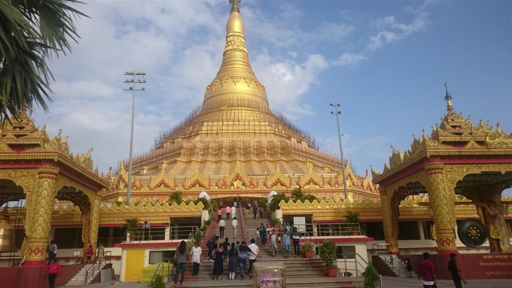
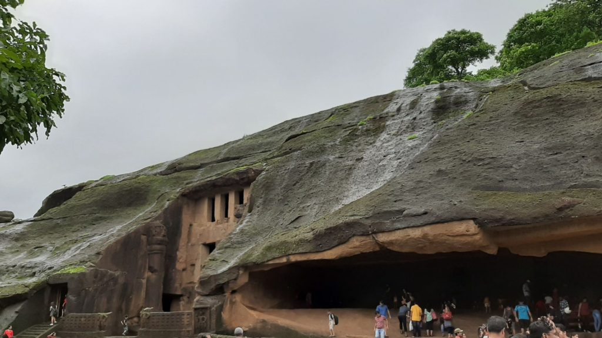
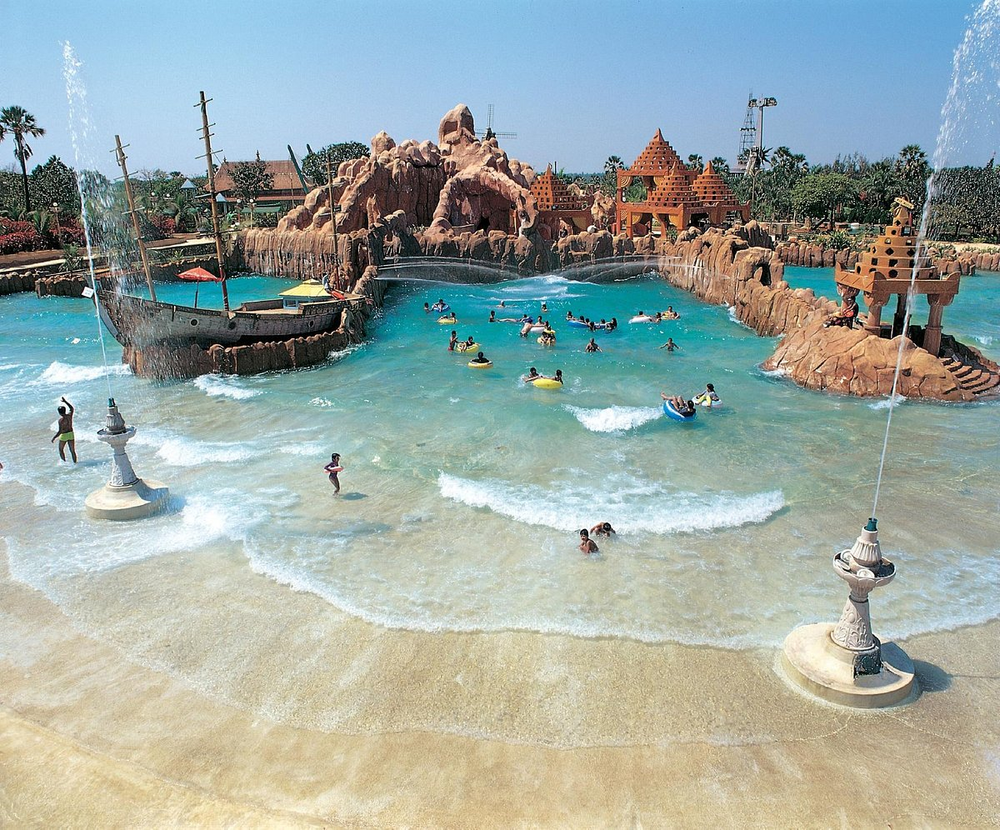

BORIVALI
arrow_upward
Pagoda

The Global Vipassana Pagoda is a Meditation dome hall with a capacity to seat around 8,000 Vipassana meditators
(the largest such meditation hall in the world) near Gorai, north-west of Mumbai, Maharashtra, India. The pagoda was
inaugurated by Pratibha Patil, then President of India, on 8 February 2009. It is built on donated land on a peninsula
between Gorai creek and the Arabian Sea. The pagoda is to serve as a monument of peace and harmony. The Global Vipassana
Pagoda has been built out of gratitude to Sayagyi U Ba Khin (1899 - 1971), Vipassana teacher and the first Accountant-General
of Independent Burma, who was instrumental in Vipassana returning to India, the country of its origin.
The center of the Global Vipassana Pagoda contains the world's largest stone dome built without any supporting pillars. The
height of the dome is approximately 29 meters, while the height of the building is 99.06 meters, which is twice the size of the previously
largest hollow stone monument in the world, the Gol Gumbaz Dome in Bijapur, India. The external diameter of the largest
section of the dome is 97.46 m and the shorter sections are 94.82m. The internal diameter is 85.15 m. The inside of the
pagoda is hollow and serves as a very large meditation hall with an area covering more than 6000 m2 (65,000 ft2). The massive
inner dome seats over 8000 people enabling them to practice the non-sectarian Vipassana meditation as taught by S. N. Goenka
and now being practiced in over 100 countries. An inaugural one-day meditation course was held at the pagoda on 21 December
2008, with Goenka in attendance as the teacher.Ten-day vipassana meditation courses are held free of charge at the Dhamma
Pattana meditation center that is part of the Global Vipassana Pagoda complex.
The foundation of the dome consists of basalt,
while the dome itself is made from sandstone brought from Rajasthan. The individual blocks of sandstone weigh 600–700 kg each
and are kept in place due to the unique design of the bricks. Each of the bricks interlock with the ones adjacent to it and
lime mortar is used to fill in any remaining gaps. The circumambulation path is laid in marble. The pinnacle of the pagoda is
adorned with a large crystal. The spire is covered in real gold, while the rest of the pagoda is covered in gold paint. The
spire is topped with a special ornamental umbrella piece donated by the Burmese. The main doors to the pagoda are wooden and
hand-carved in Myanmar (Burma).
National Park

Sanjay Gandhi National Park, also known as SGNP, is an 87 km2 (34 sq mi) protected area in Mumbai, Maharashtra. It was
established in 1969 with its headquarters situated at Borivali. The 2400-year-old Kanheri caves, sculpted by monks out of
the rocky basaltic cliffs, lie within the park. The rich flora and fauna of the Sanjay Gandhi National Park attract more than
2 million visitors every year.
The area of the Sanjay Gandhi National Park has a long written history dating back to the 4th century BC. In Ancient India,
Sopara and Kalyan were two ports in its vicinity that traded with ancient civilisations such as Greece and Mesopotamia. The 45
km (28 mi) land route between these two ports was partially passing through this forest. The Kanheri caves, located centrally
in the park, were important Buddhist learning centres and pilgrimage sites sculpted by Buddhist monks (using primitive
sculpting tools) between the 9th and the 1st centuries BCE. They were chiselled out of a massive basaltic rock outcropping.
The monks carved exquisite Buddhist carvings and designs within the caves, and even had properly built spaces designated
as kitchens, dining halls, etc., with drainages built alongside the halls.
The park is forestland, with an estimated 800 types of mauve. This flower is native to the park and the surrounding regions,
including Karnala, the Yeoor hills, Tungareshwar, and some parts of Goregaon's Film City. The park is also home to a small
population of leopards.
The park is home to a number of endangered species of flora and fauna. The forest area of the park houses over 1,000 plant
species, 251 species of migratory, land, and water birds, 5,000 species of insects, and 40 species of mammals. In addition,
the park also provides shelter to 38 species of reptiles, 9 species of amphibians, 150 species of butterflies, and a large
variety of fish.
Water Kingdom

Water Kingdom in Borivali is a popular water park situated in the bustling city of Mumbai. It is a thrilling and refreshing
destination that offers a wide range of water-based activities and attractions for visitors of all ages. With its vast expanse
of pools, slides, and rides, Water Kingdom provides a perfect escape from the heat and monotony of daily life. Whether it's
speeding down high-speed slides, relaxing on lazy river rides, or enjoying the wave pools, there's something for everyone at
Water Kingdom. The park boasts a vibrant and lively atmosphere, with families, friends, and thrill-seekers coming together to
have a memorable day filled with fun and excitement. The well-maintained facilities, friendly staff, and safety measures
ensure a memorable and enjoyable experience for all visitors to Water Kingdom in Borivali.
It is not only the largest water park in Asia but also a popular tourist attraction in Mumbai. Nestled within
the sprawling city, this aquatic paradise offers a wide array of thrilling water rides, slides, and experiences that cater to visitors
of all ages. From adrenaline-pumping slides like the "What-A-Coaster" and "Drainage Diver" to the relaxing and serene "Lazy River,"
Water Kingdom provides an exciting escape from the city's hustle and bustle. The park features multiple pools, including the wave pool
that simulates the experience of being in the ocean. Additionally, the park offers various attractions such as rain dance areas, water-
based games, and a dedicated children's play zone, ensuring that there is never a dull moment. With its well-maintained facilities,
numerous food outlets, and a vibrant ambiance, Water Kingdom is a go-to destination for locals and tourists seeking a refreshing and
memorable experience in Borivali.
Water Kingdom is a true haven for water enthusiasts, offering an exhilarating blend of thrilling rides, relaxing
attractions, and a lively atmosphere. Whether you're seeking adventure or simply want to unwind, this water park promises a day
filled with excitement, laughter, and unforgettable memories in the heart of Mumbai.
About Me
Amey Parab
22 Years Old
SLRTCE Alumni
LinkedIn